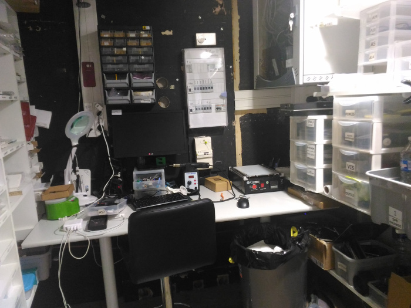

La découverte de l'environnement de travail de PSM Numerik's
05 août 2017
Cette première semaine était consacrée à mon intégration dans l’entreprise PSM Numerik’s à Vienne. La première journée, j’ai
plus pris connaissance des éléments qui allaient m’entourer pendant ces six semaines et j’ai fait la connaissance
de trois employés, Angélique, responsable du magasin de Vienne, Lucas, jeune alternant et Médilane, spécialiste
de la réparation.
Étant un point de vente et de réparation, PSM Numerik’s possède plusieurs magasins qui communiquent entre
eux et travaillent avec d’autres filiales. Notamment LDLC, un de leur magasin étant situé non loin du magasin
où je travaille, je vais donc être amené à faire des échanges avec ce magasin en particulier durant ces six
semaines de stage.
Revenons à cette première semaine qui fut très enrichissante pour moi, en effet j’ai pu découvrir le magasin
ainsi que sa notoriété et son affluence. J’ai pu me familiariser avec le point de vente et l’environnement
que j’allais côtoyer tous les jours. J’ai également pu me rapprocher des employés du magasin, avec Médilane
j’ai notamment pu effectuer quelques réparations sommaires d’ordinateurs portables et fixes et ainsi apprendre
des choses qui ne sont pas comprises dans la formation Ynov.
Avec Angélique, j’ai pu voir un peu plus de la gestion d’un magasin ainsi que de la relation client, aspect
du commerce que je ne maîtrise pas encore totalement à la fin de cette première semaine. J’ai notamment pu
aider quelques clients sur des questions et réparations simples à effectuer sur des téléphones portables
et tablettes même pour quelqu’un comme moi qui n’a pas l’habitude de gérer cela. Je me suis également occupé
de la présentation du point de vente (nettoyage, rangement en tout genre, rentrée en stock d’articles …)
pour que ce dernier soit le plus propre et présentable possible pour les clients.
Je n’ai cependant pas pu beaucoup me familiariser avec la réparation mobile et Lucas, en effet ce dernier
était la plupart du temps cloîtré dans l’arrière-boutique (photo ci-jointe), là où s’effectuent les réparations
des téléphones portables.
Tous les matins et soirs, nous comptions et gérions la caisse pour pouvoir être capables d’anticiper les
dépenses et les rentrées d’argent à chaque fin de mois. L’inventaire du magasin était quant à lui effectuer
toutes les fins de mois.

Le bilan de cette première semaine est donc plutôt satisfaisant, j’ai pu découvrir un environnement de travail
très chaleureux, je dois cependant m’intégrer davantage à cette petite équipe. Mais le magasin et le
point de vente n’ont maintenant plus de secret pour moi, ainsi durant les prochaines semaines je n’aurais
plus à poser des questions pour savoir où est tel article ou telle pièce de téléphone.